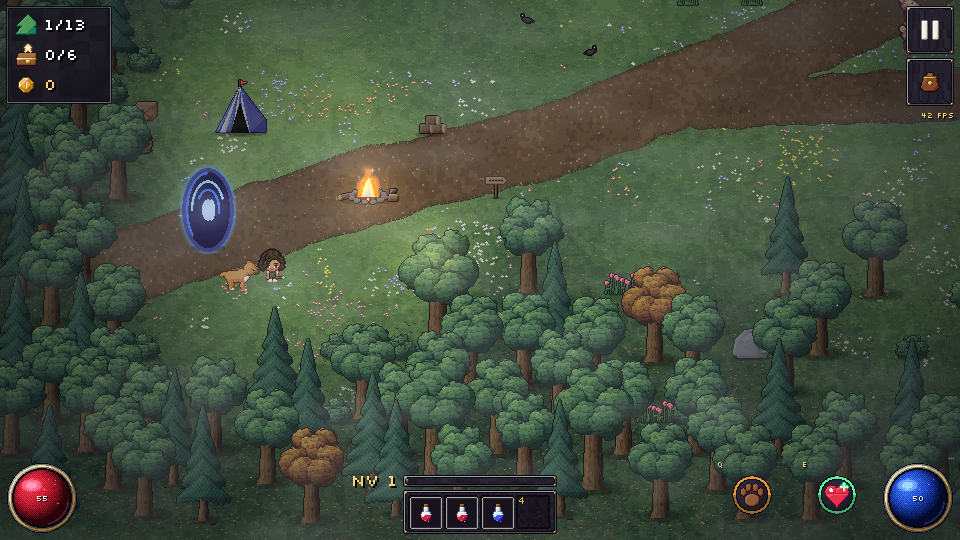
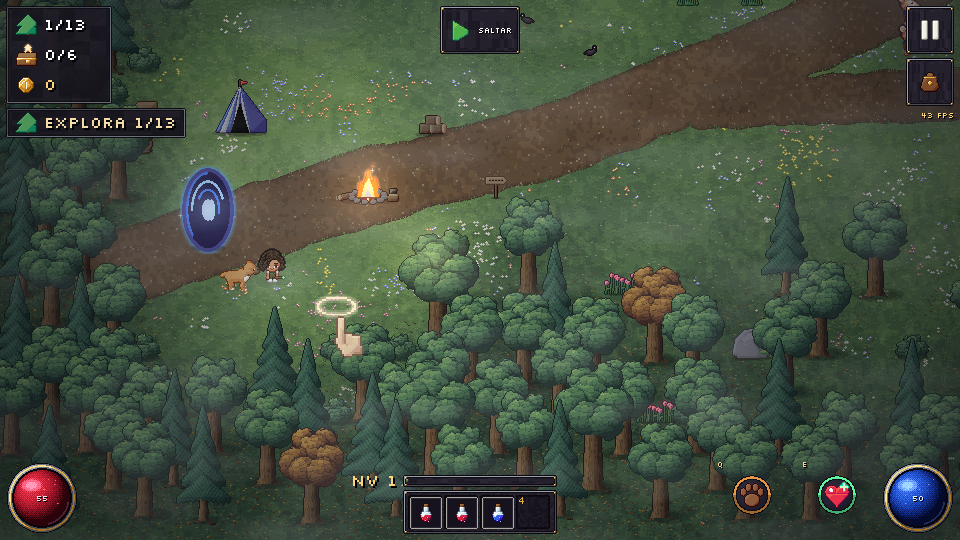
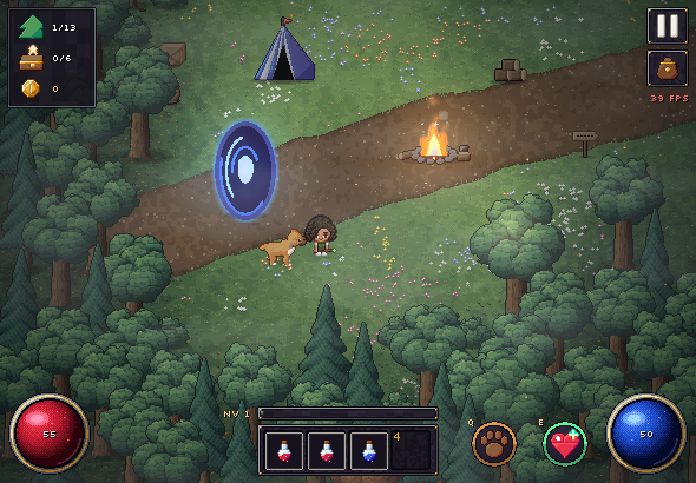
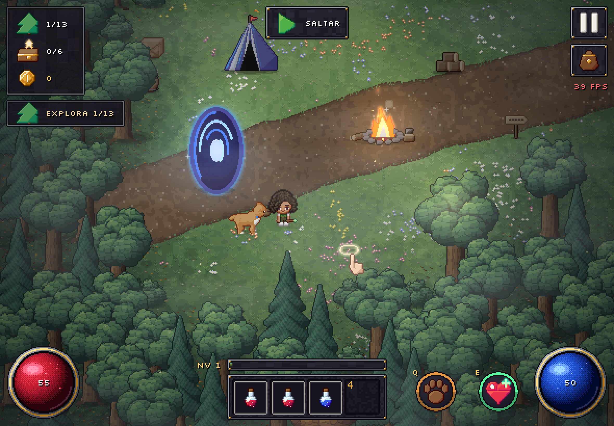
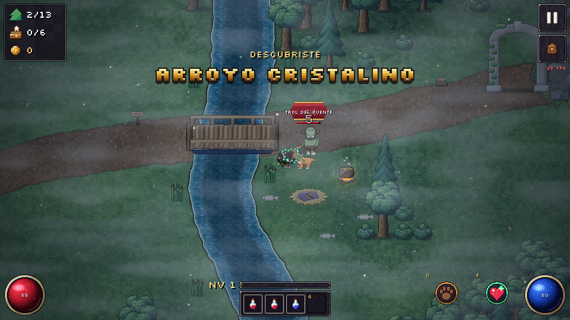
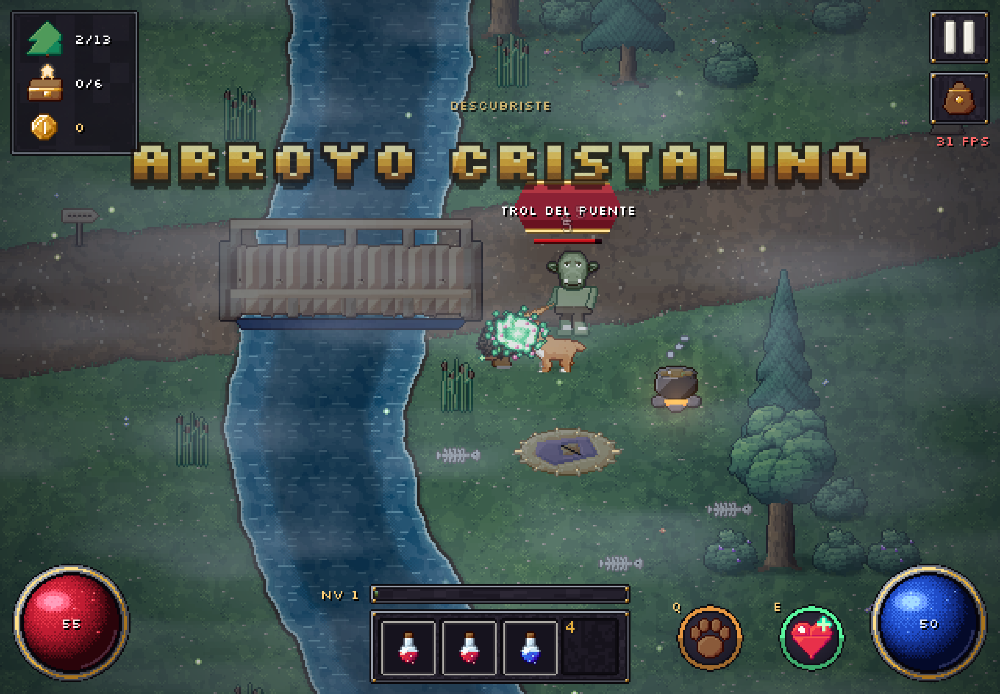
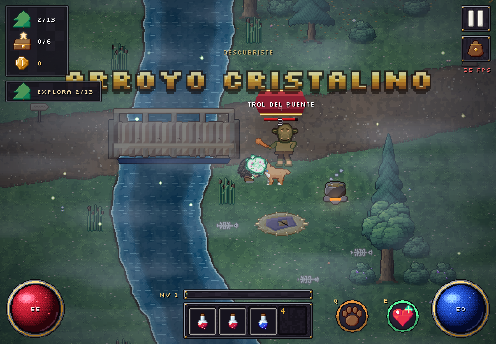

Sección de referencia: la Llegada y el puente del trol en el Arroyo Cristalino (exploración, combate y el cofre del trol). Izquierda con "Mejoras F7" apagado, derecha prendido. Para compararlo jugando: Pausa, botón "Mejoras F7". Lo que suena no sale en una foto.







| Cambio | Qué aporta |
|---|---|
| Aviso del enemigo: tinte ámbar que late mientras prepara el golpe | La anticipación se ve. Esquivar pasa a ser una decisión y no suerte. |
| Golpe que falla: marca en el punto del golpe, texto "Fallo" y un silbido | Si no pega, se ve dónde cayó el golpe y se entiende que estaba lejos. No parece un bug. |
| "¡Esquivaste!" con polvo | Cuando el enemigo falla porque ella se movió, el juego se lo reconoce. |
| Destello blanco al pegar y pausa de impacto medida | El golpe se siente sin congelar todo: la pausa es corta y no se acumula. |
| Proyectiles que se gastan muestran su impacto | Una flecha que no llega igual termina en algo visible. |
| Efectos suaves (Pausa) | Sin pausas de impacto ni sacudidas, para quien se maree. Los avisos siguen. |
| Música por estados: explorar, amenaza, combate, descanso | La música dice qué pasa. Tiene histéresis: una rata suelta no cambia la canción, tres enemigos sí. |
| El agua suena según la cercanía | El río y el lago se oyen antes de verlos y ayudan a orientarse. |
| Demostraciones para Alana: caminar, pegar, abrir | Aprende mirando una manito, sin leer. Una por vez, hasta que lo hace. Se saltan con un toque. |
| Objetivo a la vista con ícono | Siempre sabe qué toca. Tocarlo saca la flecha sin esperar. |
| Tarjeta del botín | Al recoger, dice si es mejor o peor que lo puesto y deja ponérselo de un toque. |
| ?medir=1 | Fps, frame p95, tirones y respuesta a la entrada en pantalla, para medir en la tablet de verdad. |
Las capturas vienen del Chromium sin GPU del contenedor. No dicen cómo corre en la tablet: eso se mide abriendo el juego con ?medir=1 en el aparato.